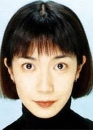

Rika Wakusawa is a Japanese voice actress.
- Gender: Female
- Birthday: December 19, 1966
- Hometown: Iwate, Japan

| |
Rika Wakusawa is a Japanese voice actress.
|
 |
|---|
 |
Rachel | Pokemon Advanced Generations | Rachel is the mother of Tate and Liza. She is also the referee for their battles. |